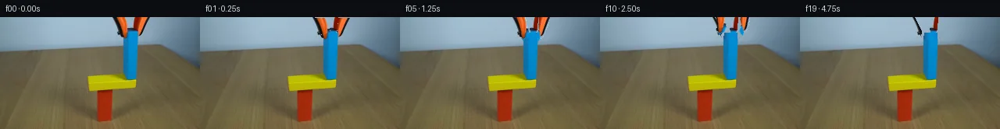

![首帧]()

Round 00
2026-11-05T10:09:51.272413+00:00像素候选变化代码 +195/−0inspection 更新
pixels b758b681fd629e91 · code 64f598d1a6523adb
查看本轮 generate.py 真实 diff
--- previous/generate.py
+++ current/generate.py
@@ -0,0 +1,195 @@
+#!/usr/bin/env python3
+"""Generate the 20-frame PixelWorld placement sequence using local pixel operations."""
+
+from pathlib import Path
+
+import numpy as np
+from PIL import Image, ImageDraw, ImageFont
+
+from artifact_io import save
+
+
+ROOT = Path(__file__).resolve().parent
+W, H = 256, 144
+
+
+def polygon_mask(points):
+ """Return an L-mode mask for a polygon, clipped to the canvas."""
+ mask = Image.new("L", (W, H), 0)
+ ImageDraw.Draw(mask).polygon(points, fill=255)
+ return mask
+
+
+def fit_surface(rgb, valid):
+ """Fit a gently varying quadratic RGB surface to selected pixels."""
+ yy, xx = np.mgrid[0:H, 0:W]
+ x = (xx - W / 2) / W
+ y = (yy - H / 2) / H
+ design = np.stack(
+ [np.ones_like(x), x, y, x * y, x * x, y * y], axis=-1
+ )
+ a = design[valid]
+ out = np.empty_like(rgb, dtype=np.float64)
+ for channel in range(3):
+ coeff, *_ = np.linalg.lstsq(a, rgb[:, :, channel][valid], rcond=None)
+ out[:, :, channel] = design @ coeff
+ return np.clip(np.rint(out), 0, 255).astype(np.uint8)
+
+
+def make_clean_plate(source, left_mask, right_mask):
+ """Numerically reconstruct wall/blue pixels hidden by the source grabber."""
+ yy, xx = np.mgrid[0:H, 0:W]
+ # Smooth wall samples, well above the table and away from all foreground.
+ wall_valid = (yy < 33) & ~((xx > 140) & (xx < 200))
+ wall = fit_surface(source, wall_valid)
+
+ # Fit the blue block's mild lighting gradient from its unobstructed core.
+ blue_valid = (xx >= 161) & (xx <= 172) & (yy >= 31) & (yy <= 69)
+ blue = fit_surface(source, blue_valid)
+
+ clean = source.copy()
+ tool = (np.asarray(left_mask) > 0) | (np.asarray(right_mask) > 0)
+ clean[tool] = wall[tool]
+
+ # The tool overlaps the top corners of the upright block in frame 00.
+ blue_shape = (
+ (yy >= 20)
+ & (yy <= 81)
+ & (xx >= 158 + ((yy < 24) & (xx < 160)))
+ & (xx <= 175)
+ )
+ hidden_blue = tool & blue_shape
+ clean[hidden_blue] = blue[hidden_blue]
+ return clean
+
+
+def component_layer(source, mask):
+ rgba = np.zeros((H, W, 4), dtype=np.uint8)
+ rgba[:, :, :3] = source
+ rgba[:, :, 3] = np.asarray(mask)
+ return Image.fromarray(rgba, "RGBA")
+
+
+def moved(layer, angle, pivot, dy):
+ """Rotate about an off-screen mechanical pivot, then translate upward/downward."""
+ return layer.rotate(
+ angle,
+ resample=Image.Resampling.BICUBIC,
+ center=pivot,
+ translate=(0.0, float(dy)),
+ fillcolor=(0, 0, 0, 0),
+ )
+
+
+def compose(clean, left, right, opening, dy):
+ canvas = Image.fromarray(clean, "RGB").convert("RGBA")
+ # Negative/positive angles move the two lower jaw tips away from the block.
+ left_now = moved(left, -12.0 * opening, (157.0, -7.0), dy)
… diff truncated; 108 more lines …